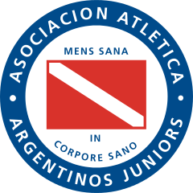
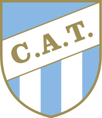

CAMPEONATO ARGENTINO DE FUTBOL
Vamos a hacer una lista desordenada de los equipos de futbol del campeonato local, la lista va a tomar los 10 primeros equipos, los proximos 10 van a estar en una lista ordenada empezando del 11 y al final quedarian 4 equipos los cuales van a estar en una lista de definicion con una breve explicacion del equipo
Esta es la lista desordenada clasica
Esta lista tiene el punto negro
- Argentinos Juniors
- Atlético Tucumán
- Banfield
Esta es la lista desordenada "circle"
Se observa el punto con el relleno blanco, solo se puede ver el contorno del boton
- Barracas Central
- Belgrano
- Central Cordoba
Esta es la lista desordenada "square"
Aca se observa que es un cuadrado en vez de un circulo como las otras dos
- Defensa y Justicia
- Deportivo Riestra
- Estudiantes
- Gimnasia y Esgrima
LISTAS ORDENADAS
El primer juego de listas que vamos a ver empiezan en 11 con el atributo "star 11" (le indicamos que empieza con el numero 11 en este caso en particular).
- Godoy Cruz
- Huracan
- Independiente Rivadavia
Listas ordenadas star 14, type A
Estas listas empiezan en el numero 14, pero despues le decimos que nos muestre letras mayusculas y en el alfabeta el 14 es la n, por eso la lista empieza en N.
- Instituto
- Lanus
- Newells Old Boys
Listas ordenas star 17, type I
Estas listas empiezan en el numero 17, pero con type le decimos que nos muestre numeros romanos y el 17 en numeros romanos es el XVII, que es con el numero que empieza
- Platence
- Rosario Central
- Sarmiento
Listas ordenas star 20, type i
Estas listas empiezan en el numero 20, el type que se el puso es "i", por eso se muestran los numeros romanos en minusculas
- Talleres
- Tigre
Listas ordenadas star 23, reversed
estas listas empiezan en 23 porque se le puso el atributo reversed, esto hace que se ponga del ultimo al primer numero en la lista
- Union
- Velez Sarfield
LISTAS DE DEFINICION
En una lista de definicion, se utilizan 2 elementos (dt y dd) el primer termino "dt" es la palabra que queremos definir. y el segundo termino "dd" es la definicion de la palabra que pusimos a definir.
- RIVER PLATE
- NO HAY LUGAR EN EL MUNDO DONDE NO SE CONOZCA, DICEN QUE ES MAS CONOCIDO QUE GARDEL, MARADONA Y MESSI JUNTOS (puede que exageren un poco, sacamos a messi y quedamos bien???)
- Voka Juniors
- Su cancha esta en las sombras de la Capital federal
- Independiente
- Son todos malos sus simpatizantes, por algo le dicen "LOS DIABLOS DE AVELLANEDA"
- Racing
- Sin risas por favor, gano un campeonato despues de 30 años y parece que vamos por 30 años mas para su proximo campeonato
TABLAS
Vamos a hacer las tablas mostrando los equipos, la ciudad donde estan ubicados, el nombre del estadio, el escudo y por ultimo un link con la ubicacion de google map
| EQUIPO | CIUDAD | ESTADIO | ESCUDO | UBICACION | |
| Argentinos Juniors | Buenos Aires | Diego Armando Maradona |  | ||
| Atletico Tucuman | San Miguel de Tucuman | Monumental Jose Fierro |  | ||
| Banfield | Banfield | Florencio Sola |

|
||
| Barracas Central | Buenos Aires | Claudio Chiqui tapia |
|
||
| Belgrano | Córdoba | Julio Cesar Villagra |

|
||
| Voka Juniors | Buenos Aires | Alberto J. Armando |

|
IMPOSIBLE MOSTRAR | |
| Central Cordoba | Santiago del Estero | Unico Madre de Ciudades |

|
||
| Defensa y Justicia | Gobernador Costa | Norberto Tomaghello |

|
||
| Deportivo Riestra | Buenos Aires | Guillermo Laza |

|
||
| Estudiantes | La Plata | Jorge Luis Hirschi |

|
||
| Gimnasia y Esgrima | La Plata | Juan Carmelo Zerillo |

|
||
| Godoy Cruz | Godoy Cruz | Malvinas Argentinas |

|
||
| Huracan | Buenos Aires | Tomas Adolfo Ducó |

|
||
| Independiente | Avellaneda | Libertadores de America - Ricardo Enrique Bochini |

|
||
| Independiente de Rivadavia | Mendoza | Bautista Gargantini |

|
||
| Instituto | Cordoba | Juan Domingo Peron |

|
||
| Lanus | Lanus Este | Ciudad de Lanus - Nestor Diaz Perez |

|
||
| Newells Old Boys | Rosario | Marcelo Bielsa |

|
||
| Platence | Vicente Lopez | Ciudad de Vicente Lopez |

|
||
| Racing Club | Avellane | Presidente Peron |
.svg.png)
|
||
| RIVER PLATE EL MAS GRANDE | Buenos Aires | EL MONUMENTAL |

|
||
| Rosario Central | Rosario | Gigante de Arroyito |
|
||
| San Lorenzo | Buenos Aires | Pedro Bidegain |

|
||
| Sarmiento | Junin | Eva Peron |

|
||
| Talleres | Cordoba | Mario Alberto Kempes |

|
||
| Tigre | Victoria | Jose Dellagiovanna |

|
||
| Union | Santa Fe | 15 de Abril |

|
||
| Velez Sarfield | Buenos Aires | Jose Amalfitani |

|